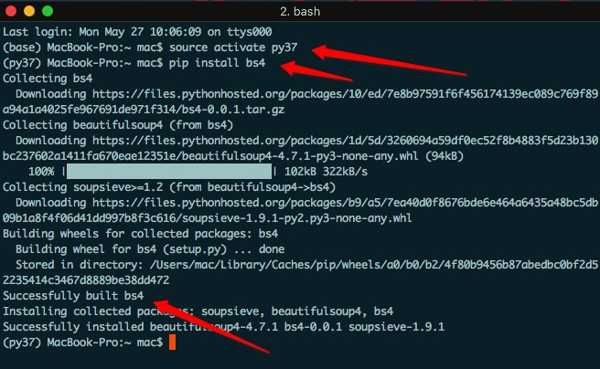

BeautifulSoup库的基本使用
简介
正则表达式对于我们来说用起来是不方便的，而且需要记很多规则，所以用起来不是特别熟练。 BeautifulSoup库一个灵活又方便的网页解析库，处理高效，支持多种解析器。 利用它就不用编写正则表达式也能方便的实现网页信息的抓取。
安装

基础使用
from bs4 import BeautifulSoup
html = '''
<body>
<header id="header">
<h3 id="name">小强也可爱</h3>
<title>标题</title>
<div class="sns">
<a href="http://www.kaikeba.com/feed/" target="_blank" rel="nofollow" title="RSS"><i class="fa fa-rss" aria-hidden="true"></i></a>
<a href="http://kaikeba.com/kaikeba" target="_blank" rel="nofollow" title="Weibo"><i class="fa fa-weibo" aria-hidden="true"></i></a>
<a href="https://www.kaikeba.com/in/kaikeba" target="_blank" rel="nofollow" title="Linkedin"><i class="fa fa-linkedin" aria-hidden="true"></i></a>
<a href="mailto:kaikeba@gmail.com" target="_blank" rel="nofollow" title="envelope"><i class="fa fa-envelope" aria-hidden="true"></i></i></a>
</div>
<div class="nav">
<ul><li class="current-menu-item"><a [href="http://www.kaikeb](http://www.kaikeba.com/)a.com/">hello</a></li>
<li><a [href="http://www.kaikeba.com/about-me/">word](http://www.kaikeba.com/about-me/)
<li><a [href="http://www.kaikeba.com/post-search/">nihao>
<li><a [href="http://www.kaikeba.com/wp-login.php">kkb](http://www.kaikeba.com/wp-login.php)
</ul> </div>
</header>
</body> '''
soup = BeautifulSoup(html,'lxml')
# 格式化输出 soup 对象的内容
print(soup.prettify())
# 根据标签名获取整个标签(但是拿出的是第一个) print(soup.li)
# 获取标签的名字
print(soup.title.name)
# 获取标签中的文本
print(soup.title.string)
# 获取标签title的父标标签
print(soup.title.parent.name)
# 获取li标签的子标签
print(soup.li.contents)
# 获取便签的属性值的两种方式
print(soup.li["class"]) print(soup.li.attrs['class'])
# 使用select，css选择器
print(soup.select('li'))
# 类 名 前 加 .，id 名 前 加 #
print(soup.select('.current-menu-item'))
# 获取内容
print(soup.select('.current-menu-item')[0].get_text())
# 获取属性值
print(soup.select('.current-menu-item')[0].attrs['class'])
# 获取li标签下面的子标签
print(soup.select('li > a')[1].get_text())
# 使用find和findall进行查找
print(soup.find('li',attrs={'class':'current-menu-item'}))
print(soup.find_all('li',attrs={"class":"current-menu-item"})[0])
Xpath的基本使用
简介
XPath 是一门在 XML 文档中查找信息的语言。 使用路径表达式来选取 XML 文档中的节点或者节点集。注意： xpath速度比较快，是爬虫在网页定位中的较优选择，但是很多网页前端代码混乱难以定位。
安装：pip install lxml
语法
| 表达式 | 描述 |
|---|---|
| nodename | 选取此节点的所有子节点。 |
| / | 从根节点选取。 |
| // | 从匹配选择的当前节点选择文档中的节点，而不考虑它们的位置。 |
| . | 选取当前节点。 |
| .. | 选取当前节点的父节点。 |
| @ | 选取属性。 |
| 通配符 | 描述 |
|---|---|
| * | 匹配任何元素节点。 |
| @* | 匹配任何属性节点。 |
| node() | 匹配任何类型的节点。 |
基础使用
# 导入lxml的etree库
from lxml import etree
data_str = """
<div>
<ul>
<li class="item-0"><a href="link1.html">first item</a></li>
<li class="item-1"><a href="link2.html">second item</a></li>
<li class="item-inactive"><a href="link3.html">third item</a></li>
<li class="item-1"><a href="link4.html">fourth item</a></li>
<li class="item-0"><a href="link5.html">fifth item</a>
</ul>
</div>
"""
# 注意： 该数据中缺少了一个li标签的闭合标签
# 利用etree.HTML可以将字符串或者bytes转化为Element python对象，这个对象具有Xpath的方法
html = etree.HTML(data_str)
# print(html)
# etree.tostring(html)可以自动修正HTML代码，补全了缺胳膊少腿的标签
# 使用为了观察修改以后的html样子，根据修改后的HTML去写Xpath
result = etree.tostring(html)
print(result.decode("utf-8"))
# 获取class =item-1 的 a标签的href属性
result = html.xpath('//li[@class="item-1"]/a/@href')
print(result)
# 获取class =item-1 的 a标签的文本值
result = html.xpath('//li[@class="item-1"]/a/text()')
print(result)
PyQuery的使用
简介
pyquery库是jQuery的Python实现，能够以jQuery的语法来操作解析 HTML 文档， 易用性和解析速度都很好，和它差不多的还有BeautifulSoup，都是用来解析的。
安装
终端执行： pip install pyquery
文件中测试： import pyquery
初始化pyquery对象
#将字符串初始化
html = """
<html lang="en">
<head>
<title>PyQuery</title>
</head>
<body>
<ul id="container">
<li class="o1">MM</li>
<li class="o2">MN</li>
<li class="o3">GN</li>
</ul>
</body>
</html> """
from pyquery import PyQuery as pq
#初始化为PyQuery对象
doc = pq(html)
print(type(doc))
print(doc)
# 将HTML文件初始化
doc = pq(filename = './pyquery_demo.html')
print(type(doc))
print(doc)
# 对网址响应进行初始化
doc = pq(url='http://www.baidu.com')
print(type(doc))
print(doc)
常用css选择器获取标签
html = """
<html lang="en">
<head>
<title>PyQuery</title>
</head>
<body>
<ul id="container">
<li class="o1">MM</li>
<li class="o2 active">MN<a class='o22'>fad</a></li>
<li class="o3">GN</li>
</ul>
</body>
</html>
"""
from pyquery import PyQuery as pq
#用css选择器来实现，如果要选id前面加#，如果选class，前面加.，如果选标签名，什么也不加
doc = pq(html)
# 根据标签
# print(doc('title'))
# print(doc('#container'))
#print(doc('.o1'))
# 组合标签
print(doc('.o2.active'))#空格表示里面，没有空格表示整体
print(doc('.o2 .o22'))#空格表示里面，没有空格表示整体
# 伪类选择器
# print(doc('li:nth-child(2)'))
# 根据标签内容获取标签
# print(doc("li:contains('MM')"))
#利用find方法
# print(doc.find('li'))
# 也可以用.children()查找直接子元素
# container = doc.find('#container')
# print(container.children())
#.parent()查找对象的父元素
# object_2 = doc.find('.o2')
# print(object_2.parent())
#.parents（）祖先节点
# object_2 = doc.find('.o2')
# parent = object_2.parents('#container')#当然也可以传入参数# print(parent)
#.siblings()兄弟元素，即同级别的元素，不包括自己
# object_2 = doc.find('.o2')
# print(object_2.siblings())
# 遍 历
# doc = pq(html)
# lis = doc('li').items()#.items会是一个生成器
# print(type(lis))
# for li in lis: # print(li)
# 5.filter() ——根据类名、id名得到指定元素，例：
# d=pq("<div><p id='1'>test 1</p><p class='2'>test 2</p></div>")
# d('p').filter('#1') #返回[<p#1>]
# d('p').filter('.2') #返回[<p.2>]
# 6.eq(index) ——根据给定的索引号得到指定元素
# 接上例，若想得到第二个p标签内的内容，则可以：
# print d('p').eq(1).html() #返回test 2
获取标签信息
html = """
<html lang="en">
<head>
<title>PyQuery</title>
</head>
<body>
<ul id="container">
<li class="o1">MM</li>
<li class="o2 active">MN<a class='o22'>fad</a></li>
<li class="o3">GN</li>
</ul>
</body>
</html>
"""
from pyquery import PyQuery as pq
doc = pq(html)
# 获取属性值
# o2 = doc.find('.o2')
# print(o2.attr('class'))
# 获取文本值
o2 = doc.find('.o2')
print(o2.text())